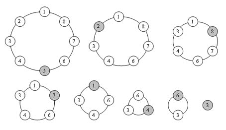

Josephus
Este problema envolve determinar a posiçãoo inicial de N pessoas em um determinado círculo.
Após ter inserido um determinado número N de pessoas no círculo comece a
eliminá-las uma a uma em intervalos M de forma a restar apenas uma.
Por exemplo, para N=8 e M=5 a ordem de eliminação será:
5 , 2 , 8 , 7 , 1 , 4 , 6 e restará o 3
<<-- Veja a figura referente ao exemplo acima -->>
Com base no problema, implemente um programa em C para encontrar a posição da pessoa não eliminada.
As funções a serem implementadas estão descritas abaixo:
Inicializa / Insere no círculo / Imprime sequência de eliminação / Informe sobrevivente

Código
#include <stdio.h>
#include <stdlib.h>
typedef struct lista TLista;
struct lista {
int dado;
TLista* prox;
};
TLista *aux2;
TLista* inicializa() {
return NULL;
}
TLista* insere(int num, TLista *lista) {
TLista *aux;
aux = (TLista*) malloc(sizeof(TLista));
aux->dado = num;
if (!lista) {
aux->prox = aux;
} else {
TLista* cont = lista->prox;
do {
cont = cont->prox;
}while (cont->dado != lista->prox->dado);
aux->prox = cont;
lista->prox = aux;
}
return aux;
}
void imprime(TLista *lista, TLista *cont) {
do {
printf("%d", cont->dado);
cont = cont->prox;
} while (cont != lista);
}
int localiza(TLista *lista, int j) {
int i;
for (i = 1; i <= j; i++) {
lista = lista->prox;
}
return lista->dado;
}
TLista* remover(TLista *lista, int j) {
int i;
TLista *aux;
j--;
for (i = 1; i <= j; i++) {
lista = lista->prox;
}
aux = lista->prox->prox;
free(lista->prox);
lista->prox = aux;
return lista;
}
int existe(TLista *lista){
return (lista->prox == lista) ? 0 : 1 ;
}
int verifica(TLista *lista) {
return lista == NULL;
}
int main(void) {
setbuf(stdout, NULL);
TLista *lista;
lista = inicializa();
int opcao = 0, i, cont = 0, j = 0;
printf("JOSEPHUS\n");
do {
printf("\nMenu\n");
printf("1-N�mero de Componentes\n");
printf("2-Intervalo de Eliminação\n");
printf("3-Ordem de Eliminação e Sobrevivente\n");
printf("0-Sair\n");
printf("\nOpção: ");
fflush(stdin);
scanf("%d", &opcao);
switch (opcao) {
case 1:
printf("\nDigite o número de componentes: ");
fflush(stdin);
scanf("%d", &cont);
for (i = 1; i <= cont; i++) {
lista = insere(i, lista);
}
break;
case 2:
if (!verifica(lista)) {
printf("\nDigite o intervalo de elimina��o: ");
fflush(stdin);
scanf("%d", &j);
}else
printf("N�o existem componentes.\n");
break;
case 3:
if (!verifica(lista)) {
if (j != 0) {
printf("Ordem de Eliminação: ");
while (existe(lista)) {
printf("%d ", localiza(lista, j));
lista = remover(lista, j);
}
printf("\nSobrevivente: ");
imprime(lista, lista);
printf("\n");
} else
printf("\nInforme o intervalo de eliminaçõo.\n");
} else
printf("N�o existem componentes.\n");
break;
case 0:
//Sair
break;
default:
printf("Opção inválida.\n");
break;
}
} while (opcao != 0);
//Fim da Aplicação
return 0;
}